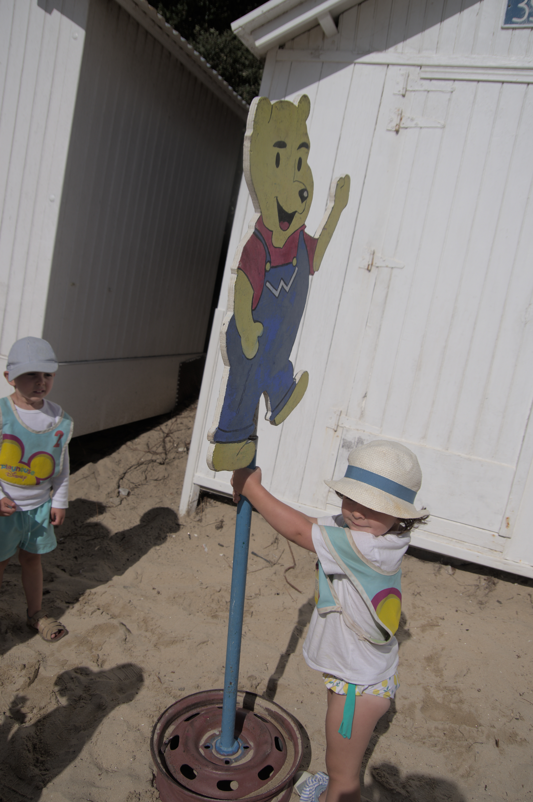

Les différents groupe d'âge

Winnie
Les enfants peuvent arriver entre 9h et 10h À 10h, la trompette sonne, c'est l'heure de la mythique Chanson du Club Chaque groupe d'âge évolue avec son moniteur, la matinée se divise en deux parties : Une première partie sur des parcours de motricité pour les plus petits avec du matériel adapté Pour les 6-9 ans, nous organisons des courses de relais, des défis, etc Et pour les 10-14 ans, l'animateur organise du sport (football, handball, tennis de table, volley, bike and run...) Dans un deuxième temps, des jeux traditionnels (balles aux prisonniers, tomate ketchup, jeux au bord de l'eau ou jeux dans les bois...) La fin de matinée se clôture par le défi du midi Les parents/grands-parents viennent récupérer les enfants vers 12h30.
15h à 16h, les enfants peuvent jouer librement sous notre surveillance. Trampoline, football, jeux sur les installations sont proposés 16h à 17h30, nous organisons un concours différent chaque après-midi de la semaine : concours de châteaux de sable, de précision, athlétique, grands jeux, course en mer, jeux de hasard, spectacle, danse, etc À 17h30, un goûter est proposé suivi de jeux libres À 18h, tous les soirs, nous organisons une remise de cadeaux 18h30 à 19h, les enfants peuvent choisir entre une baignade dans la piscine, un entraînement de trampoline ou une rencontre de football.
matin
aprem
journée